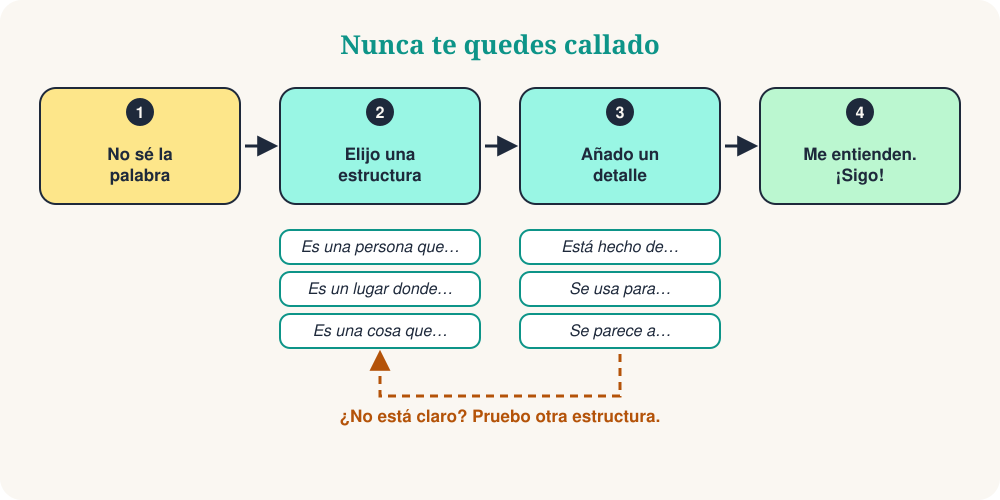

Estás en el mercado. Quieres pedir un cargador, pero la palabra ha desaparecido. Tu cerebro dice: ¡traduce! Hay una forma mejor. No busques la palabra que falta. Descríbela.
Es una habilidad real, y los hablantes nativos también la usan. Con 10 estructuras de frase puedes describir una persona, un lugar, un objeto o un momento. Muchas veces la otra persona te da la palabra. Después sigues hablando.

Las 10 estructuras de frase
Aprende la estructura, no la palabra. Lee el ejemplo en voz alta y prueba la misma estructura con una palabra nueva.
| # | Estructura | Ejemplo | Sirve para describir |
|---|---|---|---|
| 1 | Es una persona que… | Es una persona que enseña a los niños. | una persona (un profesor) |
| 2 | Es un lugar donde… | Es un lugar donde se compra comida. | un lugar (un mercado) |
| 3 | Es una cosa que… | Es una cosa que da la hora. | un objeto (un reloj) |
| 4 | Es algo que se usa para… | Es algo que se usa para escribir. | una herramienta (un bolígrafo) |
| 5 | Es un momento en el que… | Es un momento en el que la gente duerme. | un momento (la noche) |
| 6 | Es un día en el que… | Es un día en el que la gente celebra. | un día especial (una fiesta) |
| 7 | Por ejemplo… | Me gusta el deporte. Por ejemplo, el fútbol y el tenis. | una idea: dar ejemplos |
| 8 | Significa… | «Enorme» significa muy grande. | una palabra: explicar con palabras simples |
| 9 | Se parece a… | Se parece a un ordenador pequeño. | el aspecto: comparar |
| 10 | ¿Cómo se dice… en español? | ¿Cómo se dice esto en español? | cualquier palabra: pedir ayuda |
En la vida real
El camarero sonríe y te trae un bolígrafo.
Context: En una cafetería, quieres firmar la cuenta.
La persona responde: «¿El mercado? Está a dos calles de aquí.»
Context: En una ciudad nueva, buscas el mercado.
Tu amigo se ríe: «¡Un plátano!»
Context: En una fiesta, has olvidado la palabra.
10 frases de supervivencia
Son pequeños añadidos. Ponlos después de una estructura para dar más detalles.
| # | Frase | Ejemplo |
|---|---|---|
| 1 | Es un tipo de… | Es un tipo de animal. |
| 2 | Está hecho de… | Está hecho de madera o metal. |
| 3 | Se usa para… | Se usa para viajar. |
| 4 | Es lo contrario de… | Es lo contrario de «caro». |
| 5 | Suena como… | Suena como música. |
| 6 | Tiene… | Tiene cuatro ruedas. |
| 7 | Es parecido a… | Es parecido a un coche. |
| 8 | Viene de… | Viene de Italia. |
| 9 | No sé la palabra, pero… | No sé la palabra, pero es para cocinar. |
| 10 | ¿Puedes repetir, por favor? | Perdona, ¿puedes decirlo más despacio? |
El método en 3 pasos
Vamos a describir un paraguas sin decir la palabra:
- Categoría: Es una cosa que te protege.
- Función: Se usa cuando llueve.
- Detalle: Se parece a un techo pequeño.
Tres frases cortas. La otra persona dice «¡Un paraguas!» y la conversación sigue.
Evita estas 4 trampas
Quiz rápido
❓ Olvidas la palabra «panadería». ¿Qué frase funciona mejor?
«Es un lugar donde…» es la estructura perfecta para los lugares. La otra persona oye «pan» y «lugar»: ¡una panadería!
❓ ¿Qué frase describe unas «tijeras»?
Las tijeras son una herramienta, así que usa «Es algo que se usa para…».
❓ Un amigo dice: «Es lo contrario de caro.» ¿Cuál es la palabra?
Lo contrario de caro es barato. ¡Una buena forma de explicar adjetivos!
Tu práctica de 5 minutos
- Mira a tu alrededor y elige 5 objetos.
- Describe cada uno con una estructura, sin decir su nombre.
- Añade una frase de supervivencia a los dos más difíciles.
- Grábate con el móvil y escucha tu voz.
- Mañana repite con 5 objetos nuevos.
Resumen
La fluidez no es saber todas las palabras. Es no quedarse callado nunca. Aprende las estructuras, añade un detalle y sigue hablando.
“Descríbelo. No lo traduzcas.”